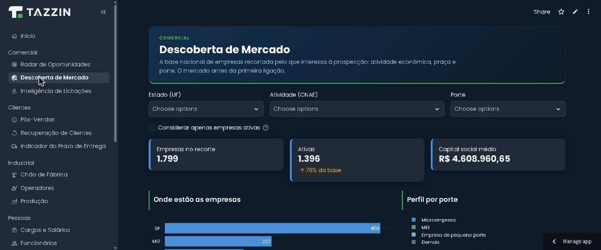
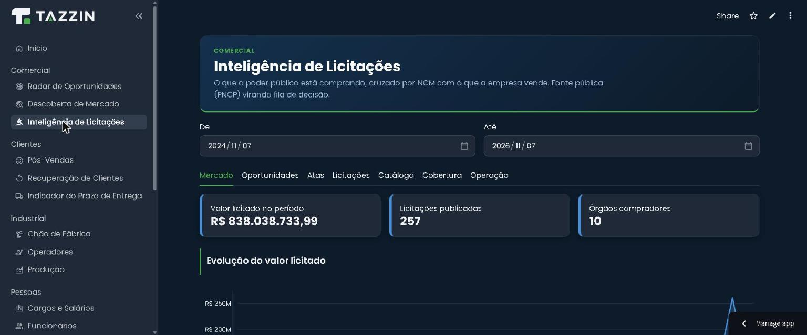

Concorrência vista pela metade
Sem uma lista completa de fabricantes e de materiais que substituem o seu, a comparação fica no “achismo”.
Quem são os concorrentes, o que vendem, por quanto e onde atuam. A Tazzin junta o que é público, confere e entrega num painel que se atualiza todo mês. Se não tem fonte, não entra.
É comum definir preço, linha de produtos e canais olhando só o concorrente mais próximo, o que o vendedor ouviu ou o que o último cliente comentou.
Sem uma lista completa de fabricantes e de materiais que substituem o seu, a comparação fica no “achismo”.
Um levantamento feito uma vez vira PDF esquecido. O mercado muda, e a decisão continua baseada no que era verdade antes.
“Esse preço vi em algum lugar.” Sem saber de onde veio, ninguém confia o bastante para mudar uma estratégia.
Cada informação do painel carrega o link de onde veio, a data em que foi coletada e quem conferiu. O que não for público fica marcado como “não público”, e nunca é estimado.
Depois do painel, as recomendações. Cada uma traz a evidência que a sustenta, a ação sugerida e o impacto estimado. As melhores viram teste no comercial, e o resultado volta para o painel.
Este é um exemplo de como o painel funciona, com oito fabricantes inventados de um setor de coberturas. Filtre, ordene, abra uma ficha e tente preencher um campo sem fonte.
Dados fictícios. Os fabricantes, os valores e os links desta demonstração foram criados só para mostrar o formato. Não representam nenhuma empresa real.
| Fabricante | Categoria | UF | Garantia | Preço anunciado | Licit. 12 m | Preenchimento |
|---|
Duas partes do trabalho já existem como módulos na demonstração pública. O resto é construído para o seu setor.
Na demonstração a base é sintética. Num cliente real, a Descoberta de Mercado lê a base pública da Receita Federal e cruza com a carteira.


A pesquisa de mercado só vale se puder ser mostrada a qualquer pessoa, inclusive ao dono do site de onde o dado saiu.
Cadastros públicos, portais de compras públicas e o que o próprio fabricante publica. Nada de bases pagas, áreas com login ou conteúdo restrito.
O painel trata de empresas, produtos, preços anunciados e canais. Não coletamos dados pessoais, em linha com a LGPD.
Cada campo guarda o link, a data da coleta e quem conferiu. Dá para auditar qualquer número do painel até a origem.
O painel não é uma foto. Ele é refeito todo mês, e o que mudou fica registrado.
Atualização das fontes: base de empresas, licitações, sites e catálogos.
Cada campo novo ou alterado é conferido e ganha link, data e responsável.
O comparativo é atualizado e o que mudou desde o mês anterior é destacado.
Evidência, ação e impacto estimado, para o comercial decidir o que testar.
Não. Usamos só fontes públicas: cadastros e portais oficiais, e o que cada fabricante publica em seu site e catálogos. Isso mantém o custo baixo e deixa todo dado rastreável.
Fica marcado como “não público”. Nunca estimamos para “completar” a tabela, porque um número sem origem pesa mais na decisão do que um campo vazio. Quando existe preço anunciado em loja ou marketplace, ele entra com o link e a data.
Sim. Cada campo mostra a fonte, a data da coleta e quem conferiu. Na demonstração acima, abra qualquer ficha para ver o formato.
O ciclo proposto é mensal, mas a frequência combina com o seu mercado. Setores que mudam preço toda semana pedem um ritmo diferente de quem muda catálogo uma vez por ano.
O método serve para qualquer setor em que haja fabricantes, distribuidores ou fornecedores com algum rastro público. As variáveis do painel são definidas com você no início, a partir do que importa para a sua decisão.
Ficam com você. O painel comparativo usa só dados públicos de terceiros. Se você quiser cruzar com a sua carteira ou com as suas vendas, isso é feito num ambiente com controle de acesso e cuidado com a LGPD.
Conte o setor e a dúvida. Respondemos com as variáveis que a pesquisa precisaria ter e por onde começar.